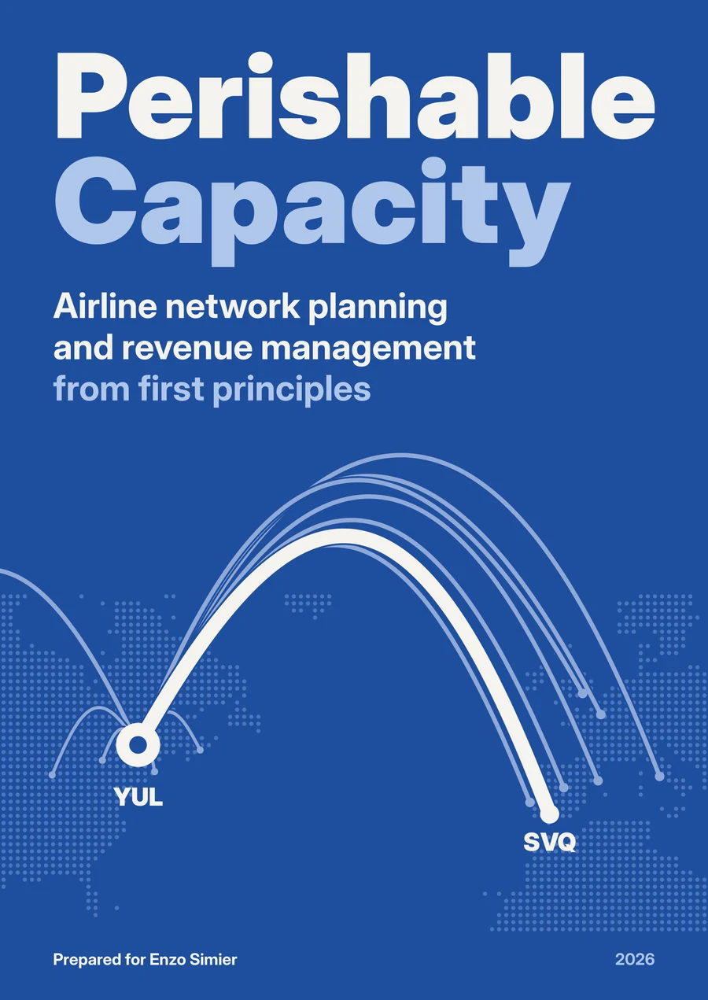
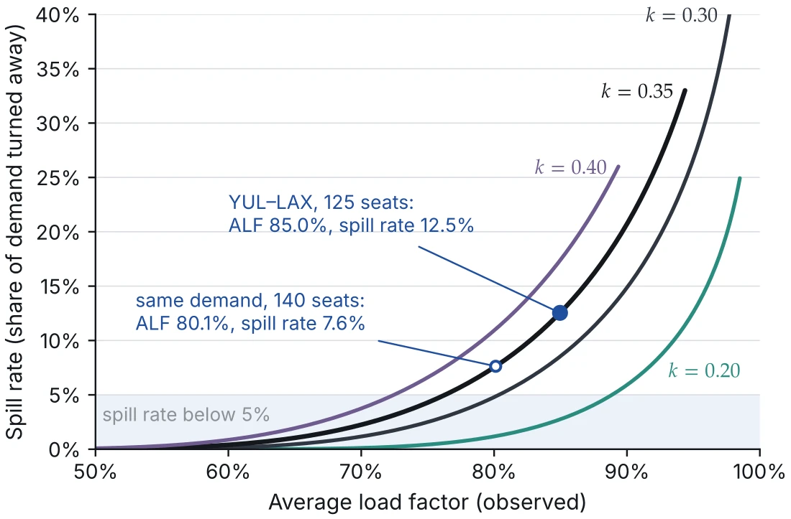
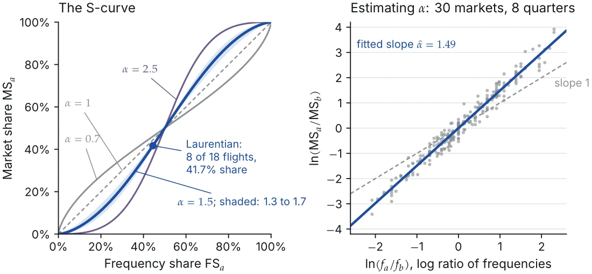
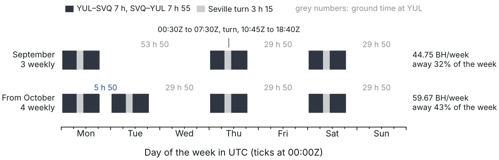
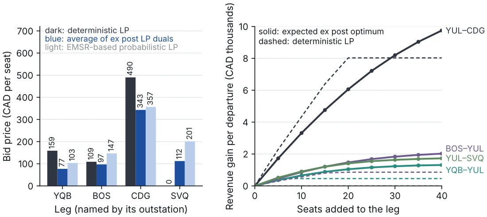

A study book · October 2026
PerishableCapacity
Airline network planning and revenue management from first principles
How an airline decides where to fly, how often, with which aircraft and at what price. Every model is derived in full and worked on one case: a new route from Montreal to Seville.
- chapters
- 24
- appendices
- 5
- figures
- 139
- worked examples
- 130
- pages
- 778
Contents
Five parts, from the planning chain to the practice of 2026.
Part I
The Airline as a System
- 1The Planning ProblemThe chain of decisions from fleet to the day of operation, and where the network analyst sits in it.
- 2Measuring an AirlineLegs, itineraries and tickets; ASK, yield, unit revenue and unit cost; Air Canada's Q2 2026 results read line by line.
- 3Costs and ProductivityWhy unit cost falls with distance and size, and which costs a route decision should count.
Part II
Demand
- 4Air Travel DemandElasticities, schedule delay, the S-curve and the traffic a new nonstop creates.
- 5Choice Models I: LogitRandom utility, the logit derivation, estimation and the value of a better schedule.
- 6Choice Models II: Nested, Mixed and Itinerary ChoiceNested and mixed logit, decision windows and the PODS passenger model.
- 7Prices Are Not Random: EndogeneityWhy revenue management biases fare elasticities, and how instruments, BLP and natural experiments repair it.
- 8Forecasting DemandBenchmarks, exponential smoothing, honest evaluation, reconciliation, booking curves and new routes.
- 9Spill and RecaptureDemand above capacity: the spill formula, unconstraining censored loads and the value of a seat.
Part III
Designing the Network
- 10Network Structure and ConnectivityHubs and connectivity, alliances and joint ventures, freedoms of the air and Canadian competition.
- 11Fleet PlanningPayload-range from first principles, the A321XLR to Seville, leasing and a fleet decision.
- 12Route EvaluationThree views of route profit, prorate and displacement, and the Montreal–Seville case season by season.
- 13Frequency and Schedule DesignFrequency against gauge, hub banks and connections, rotations, time zones and slots.
- 14Fleet AssignmentTime-space networks and the fleet assignment model, solved on a sixteen-flight instance.
- 15Aircraft Routing and Crew SchedulingMaintenance strings, crew pairing by column generation, and what a twenty-minute change breaks.
- 16Robustness and Operations RecoveryHow delays propagate, what buffers buy, robust routings and the cost of disruption.
Part IV
Revenue
- 17Pricing and Fare StructuresPrice discrimination, fences, branded fares and a fare ladder for Seville.
- 18Seat Inventory Control on a Single FlightLittlewood's rule, EMSR and dynamic programming, solved on the Seville ladder.
- 19OverbookingShow-up models, the cost-based booking limit and Canadian denied-boarding rules.
- 20Network Revenue ManagementVirtual nesting, DAVN and bid prices from the deterministic linear program.
- 21Willingness to Pay, Sell-Up and CompetitionSell-up, the spiral down, fare adjustment and dynamic pricing.
- 22Where Planning Meets Revenue ManagementBid prices as the value of capacity, and the questions to ask the revenue management team.
Part V
Practice
- 23The Industry in 2026Continuous pricing and offers, supply constraints, carbon rules and the Canadian market.
- 24The Analyst's ToolkitData sources and their traps, a reproducible workflow, audit checks and the decision memo.
Appendices
Reference
From the book
Every figure is drawn from the numbers in the text.




How it was made
Sources
The book was written from a reading library: MIT OpenCourseWare's Airline Management (16.75J, 2006) and Airline Schedule Planning (1.206J, 2003), chapters of Kenneth Train's Discrete Choice Methods with Simulation, a network planning preparation handbook, Air Canada's second-quarter 2026 MD&A, the Competition Bureau's 2025 airline market study, IATA's Worldwide Airport Slot Guidelines, EUROCONTROL's think paper on punctuality and Airbus's A321 planning manual. Facts about 2026 come from public sources, each cited where it is used.
Every number in the text is recomputed by a script, and every chapter went through an independent technical review of its derivations, numbers and sources. The book was drafted and typeset with Claude (Anthropic): the PDF in XeLaTeX with TeX Gyre Pagella and Inter, the EPUB with its mathematics typeset by LaTeX.
The running case
Laurentian, the airline of the worked examples, is fictional. Its network uses real airports and real aircraft types, but its demand, fares and costs are invented for teaching. Nothing in the book is an Air Canada forecast, cost, target or policy; public facts are dated October 2026.
Licence
The book adapts MIT OpenCourseWare material shared under the Creative Commons BY-NC-SA 4.0 licence, so it is shared under the same licence: you may copy and adapt it for non-commercial purposes, with attribution, under the same terms.